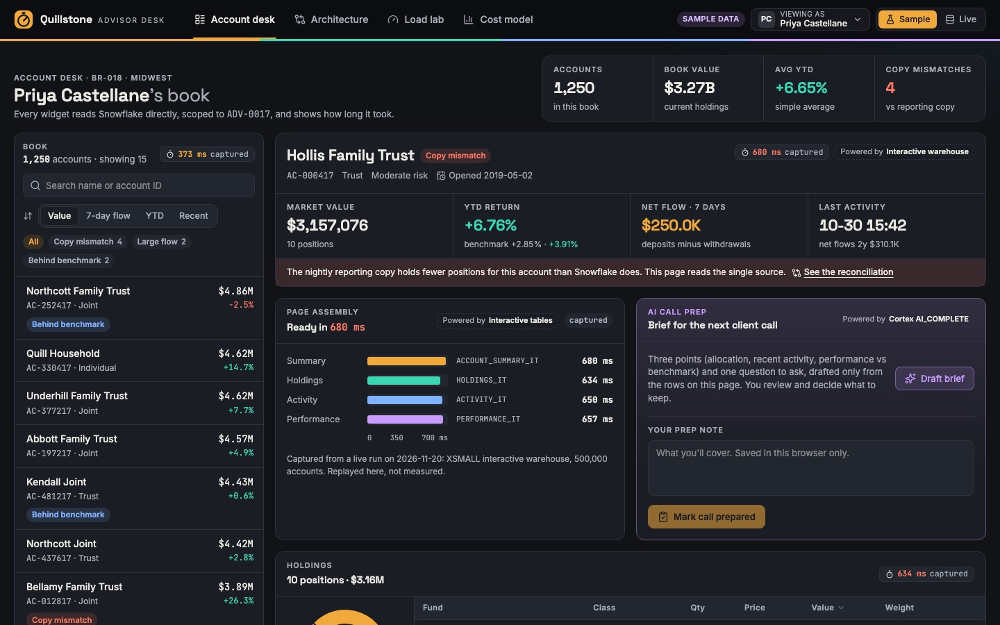
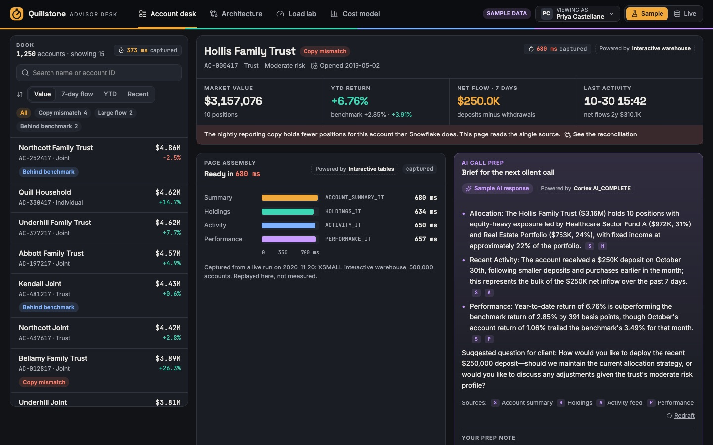
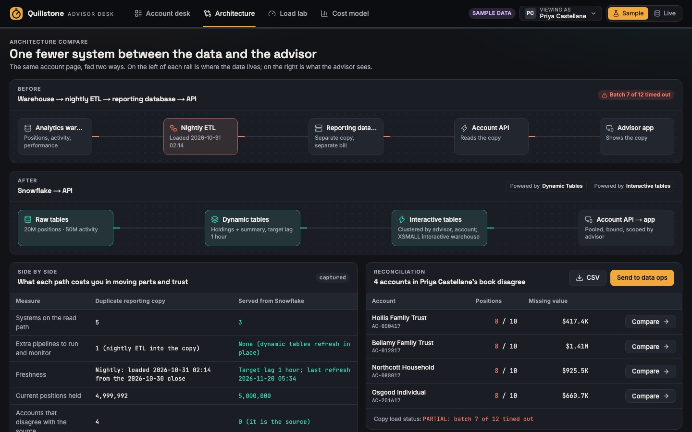
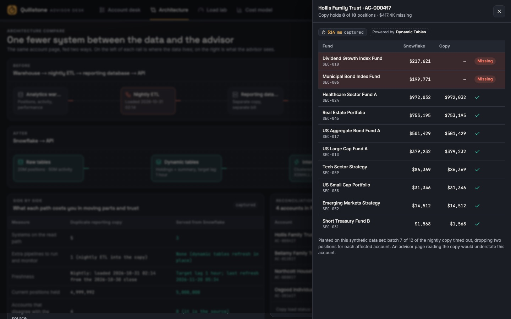
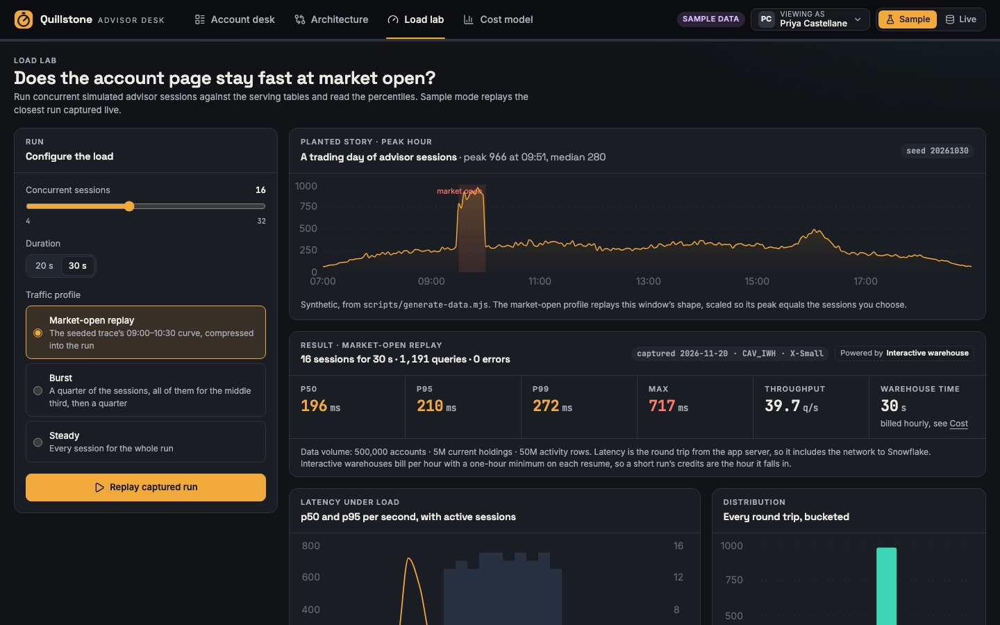
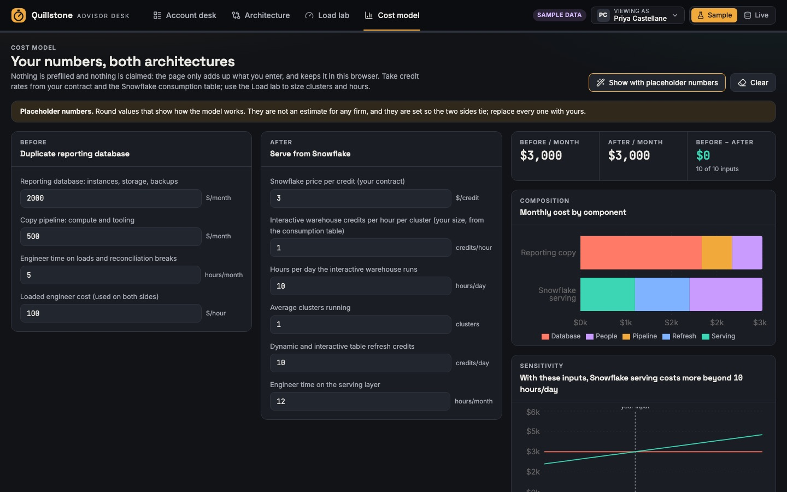
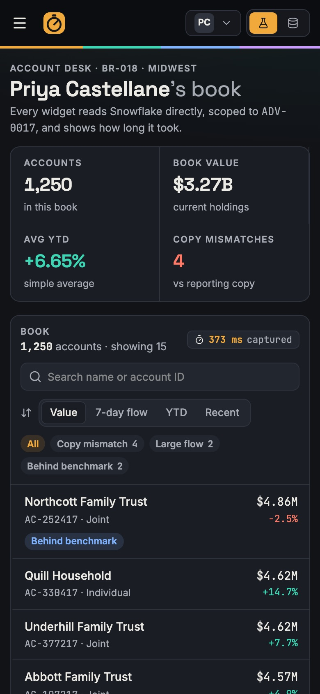
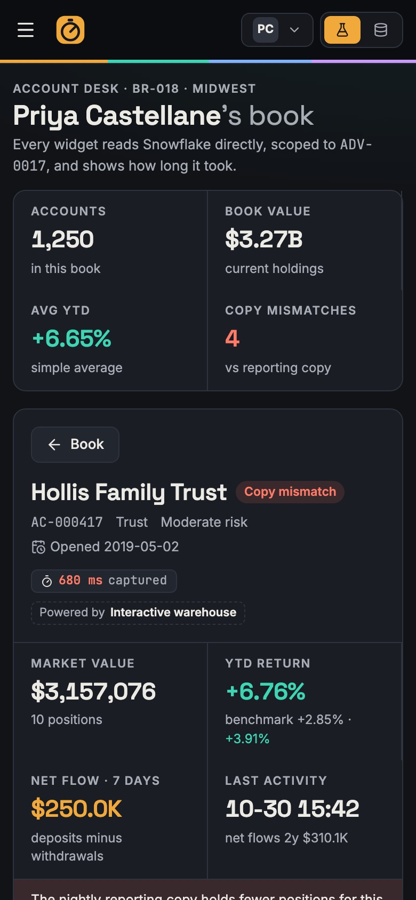
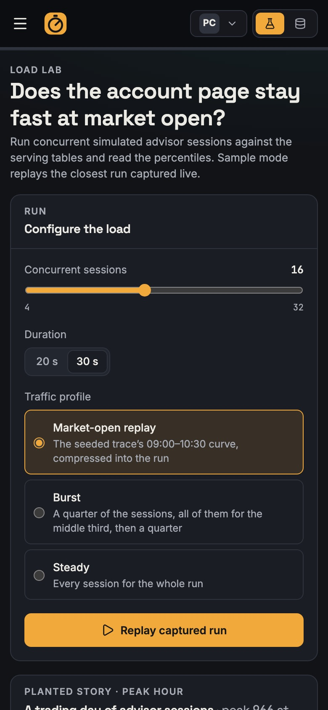

Four steps through the example
The account page loads, and every widget shows its time
An advisor's book of 1,250 accounts sits on the left, with pills for copy mismatches, large 7-day flows and accounts behind benchmark. The account page reads four interactive tables in parallel, and a waterfall shows how long each took.
Interactive tables · interactive warehouse
A cited brief for the next client call
One click drafts three points and a question from the rows on the page. Each point is tagged with the widget it came from. The advisor writes their own note and marks the call prepared.
Cortex AI_COMPLETE
One fewer system, and no reconciliation break
The before path copies positions nightly into a reporting database. On this synthetic data set a batch timed out, so four accounts show 8 positions instead of 10. The after path reads the source, refreshed by dynamic tables.
Dynamic Tables
See the missing positions
Each break opens a position-by-position comparison, and the list exports to CSV or goes to data operations.

Latency at market open, then the cost in your numbers
The load lab replays a seeded market-open surge with up to 32 concurrent sessions. In the captured 32-session replay, p95 was 222 ms with no errors on this synthetic data. The cost model then adds up only the numbers you enter.
Interactive warehouse · bound parameters
A cost model with no claims built in
Nothing is prefilled. An optional fill uses round placeholder numbers set so both sides tie, just to show how the model works.

Works on a phone


